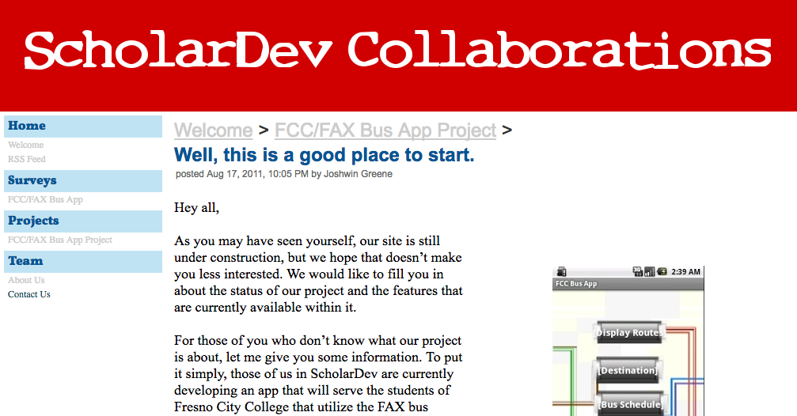
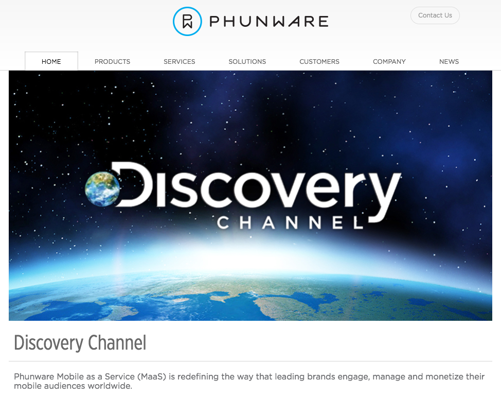
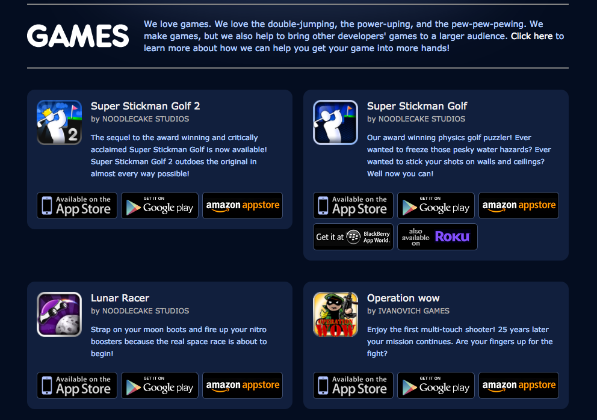
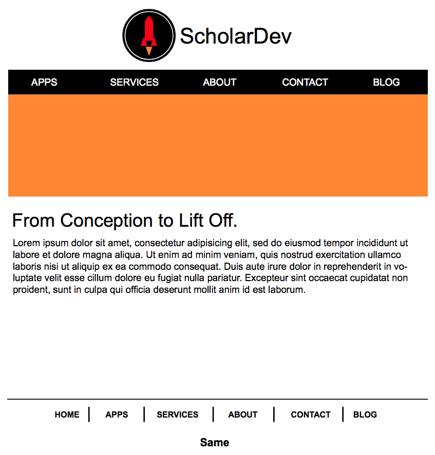
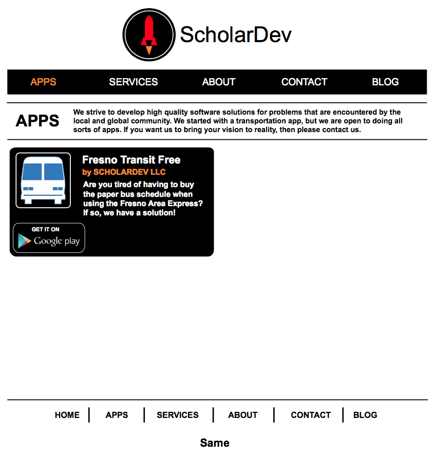
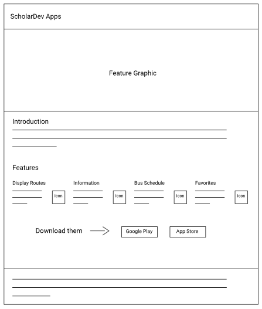

Type
Business Endeavor
Time frame
Aug 2012 - Oct 2015
(off and on)
Role
Lead Web Designer
Graphic Artist Liaison
Responsibilities
Led website design discussions
Wireframes & Mockups
User Interface Design
Copywriting
Frontend Work
Team
Peggy Bounyarith
Vanida Bounyarith
Homer Greene
Joshwin Greene
Design Tools Used
Adobe Illustrator · Precursor
Sketch · Zeplin
Pencil & Paper
Background
This project began after co-founding ScholarDev, which was a student development team that was put together in order to continue to work on the transit application that was initially created during a summer school community college project. You can learn more about that project here: Fresno Transit Free
In order to give us a way to report the progress that we were making, we created a temporary website using Google Sites.

The Challenge
Around the time that ScholarDev incorporated and formed a limited liability company, we realized that we needed to develop a professional website for our startup. Peggy was tasked with initially spearheading this endeavor. After having a few discussions on how companies usually design their website and a discussion regarding our website’s color scheme, I proposed a possible direction for our website’s design. In order to clarify my intentions, I volunteered to put a mockup together.
Inspiration
The initial version of the website was inspired by the design of the following two company websites in February of 2013: Phunware and Noodlecake Studios.

For Phunware’s website, I liked the placement of their logo and how they used a carousel to showcase the products that they built.

For Noodlecake Studios’ website, I liked how they introduced each section and how they listed their games. I wanted to do something similar for the apps that ScholarDev would build.
Initial Mockup
Here was the initial mockup that I shared with the rest of ScholarDev:


Note: For reference, the yellow rectangle on the first page is a placholder for the carousel. Also, the use of “Same” at the bottom of the page is a placeholder for ScholarDev LLC’s social media pages and the obligatory website copyright stamp.
Getting Feedback
At the following meeting, I gave a tour of my mockup and explained the thought process behind it. Besides making a slight alteration to the position of the logo, everyone generally liked the layout of each page. After this discussion, I would continue to create mockups for the remaining pages and send them out for approval.
Note: The above wireframes are recreations of the sketches that I had put togeher.
Section Introductions
After getting positive feedback, I started to draft up the snippets that would introduce each major page.
Here are the snippets:
-
APPS: We strive to develop high quality software solutions for problems that are encountered by the local and global community. We started with a transportation app, but we are open to doing all sorts of apps. If you want us to bring your vision to reality, then please contact us.
-
SERVICES: We know that everyone has ideas that they want to bring to reality. However, one common problem is having the skills in order to turn that idea into a functional product. That is where we come into the picture.
-
ABOUT: ScholarDev LLC arose from a class project that challenged us to create a transportation app for Android that would be used by the student population at Fresno City College. After the class ended, a few of us formed a professional team with the aspiration of creating mobile apps that focused on improving the community and the environment.
-
CONTACT: We would love to work with you and bring your ideas to fruition. Use the information on the left or the form to get in contact with us.
Feature Graphics
Around this time, we had outsourced work to a graphic artist by the name of Samantha Siakovich-inshaw. In order to help us market the app that we were working on, we decided to create a feature graphic. Since we had the graphic artist create three versions of this graphic, we decided that it would be a great idea to add them to the carousel on our website’s front page.
Implementation
Later that year, I would take over efforts related to developing our website. Before this point, the blog had already been created using Wordpress by Peggy. I started to construct the rest of the website.
Here was the website after the foundation was put into place:
Services Page
After researching how other mobile app development companies described their services, I brought up the idea of describing our development process and having the same graphic artist create icons that represented each step. At the time, I suggested the following 6 steps (in order): Requirements, Design, Project Plan, Development, Testing & Q/A, and Release / Support. I would write the copy for each step.
Here are recreations of my notes / sketches for each step in our development process:
When it came to working with the graphic artist to create these icons, I wrote up the design brief, acted as the liaison between ScholarDev LLC and the graphic artist, identified issues, and offered ideas on how artwork by the graphic artist could be corrected. I had the same role when we worked with the graphic artist to create the aforementioned feature graphics.
Here is the updated services page, which includes the outsourced dev. process icons:
Product Pages
I also brought up the idea of including product pages, which would be used to help market our apps.
We created a bare-bones version of our first app's product page when we received marketing support from the local transit agency that we were working with. Peggy and Vanida were responsible for creating it.
Here’s an outline of the page in question:

Around this time, Vanida was assigned the task of making the whole website responsive.
New Direction
In March of 2015, we decided to rehaul our website and set a meeting where we would determine the design strategy for our website. Before coming to this meeting, I drafted up a document that outlined the most important information that our website should include. During the meeting, I went over my outline and the thought process behind it. Since we lacked content, we decided to create a mostly one page website, which was starting to become more prominent. I volunteered to put a mockup / sketch together.
Wireframes and Mobile-First
Instead of starting with a mockup like I had done previously, I decided that it would make more sense to create wireframes first. Based on what I had been reading at the time, it was apparent that designing a mobile-first website was something that was encouraged.
Here are some pictures of the index page from the mobile wireframe:
At the next meeting, I shared these wireframes and walked everyone through the thought process behind them. After getting positive feedback, I stated that I would start to create graphic mockups after I had completed all of the wireframes that were related to our website.
Completed General Mobile WireframesGeneral Desktop WireframesRedesigned Product Page
After creating the general mobile and desktop wireframes, I suggested that we redesign the Fresno Transit Free product page so that it used a theme. I thought it would make the page more visually appealing, which would help to market our app. Even though we had everyone research additional themes, we would eventually scrap this idea as I thought it would be easier to just develop it based on the layout style that we were using for our website’s main page.
Wireframes for Fresno Transit Free Product PageGraphic Mockup
After drafting up the website’s copy and finding representive icons to use for our website via The Noun Project, I would eventually put the graphic mockup together. Zeplin would later be used to help develop the website, which was done by Vanida.
© Joshwin Greene 2017